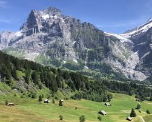
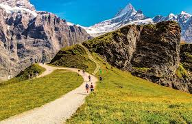
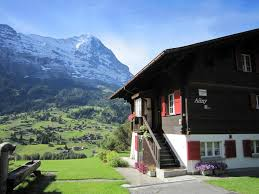

Alpine Paradise in Switzerland
Grindelwald is a base mountain town with straightforward access to Alpine hiking and skiing. The peaks around it, particularly the Eiger, are notable geological features that provide context for why this region exists. Hiking trails exist at different difficulty levels, so you can pick something that matches your fitness level. The village has traditional architecture and local restaurants that reflect Swiss mountain culture. Winter brings skiing infrastructure if that's your interest. The Jungfraujoch area is accessible and offers views from a high elevation if you want that experience. If you're interested in mountain environments, hiking, ski infrastructure, or spending time in Alpine scenery, Grindelwald has the setup to support those activities without excessive tourist overload.


